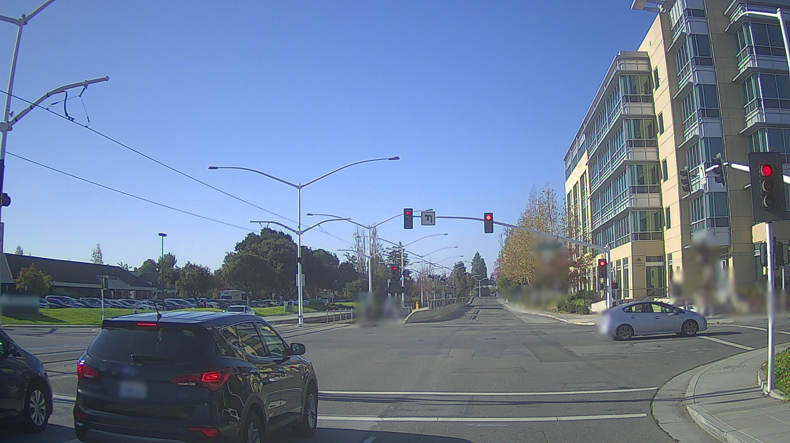

Traffic Light Perception
This document provides the details about how traffic light perception functions in Apollo 2.0.
Introduction
The Traffic Light Perception Module is designed to provide accurate and comprehensive traffic light status using cameras.
Typically, the traffic light has three states:
- Red
- Yellow
- Green
However, if the traffic light is not working, it might display the color black or show a flashing red or yellow light. Sometimes the traffic light cannot be found in the camera's field of vision and the module fails to recognize its status.
To account for all situations, the Traffic Light Perception Module provides output for five states:
- Red
- Yellow
- Green
- Black
- Unknown
The module's HD-Map queries repeatedly to know whether there are lights present in front of the vehicle. The traffic light is represented by the four points on its boundary, which can be obtained by querying the HD-Map, given the car's location. The traffic light is projected from world coordinates to image coordinates if there is a light in front of the vehicle.
Apollo has determined that using a single camera, which has a constant field of vision, cannot see traffic lights everywhere. This limitation is due to the following factors:
- The perception range should be above 100 meters
- The height of the traffic lights or the width of crossing varies widely
Consequently, Apollo 2.0 uses two cameras to enlarge its perception range:
-
A telephoto camera, whose focus length is 25 mm, is installed to observe forward, distant traffic lights. Traffic lights that are captured in a telephoto camera are very large and easy to detect. However, the field of vision of a telephoto camera is quite limited. The lights are often outside of the image if the lane is not straight enough, or if the car is in very close proximity to the light.
-
A wide-angle camera, whose focus length is 6 mm, is equipped to provide a supplementary field of vision.
The module decides which camera to use adaptively based on the light projection. Although there are only two cameras on the Apollo car, the algorithm can handle multiple cameras.
The following photos show the detection of traffic lights using a telephoto camera (for the first photo) and a wide-angle camera (for the second photo).


Pipeline
The Pipeline has two main parts and is described in following sections: - Pre-process - Traffic light projection - Camera selection - Image and cached lights sync - Process - Rectify — Provide the accurate traffic light bounding boxes - Recognize — Provide the color of each bounding box - Revise — Correct the color based on the time sequence
Pre-process
There is no need to detect lights in every frame of an image. The status of a traffic light changes in low frequency and the computing resources are limited. Normally, images from different cameras would arrive almost simultaneously, and only one is fed to the Process part of the Pipeline. Therefore, the selection and the matching of images are necessary.
Input/Output
This section describes the input and the output of the Pre-process module. The input is obtained by subscribing to topic names from Apollo or directly reading them from locally stored files, and the output is fed to the successive Process module.
Input
-
Images from different cameras, acquired by subscribing to the topic name:
/apollo/sensor/camera/traffic/image_long/apollo/sensor/camera/traffic/image_short
-
Localization, acquired by querying the topic:
/tf
-
HD Map
-
Calibration results
Output
- Image from the selected camera
- Traffic light bounding box projected from world coordinates to image coordinates
Camera Selection
The traffic light is represented by a unique ID and four points on its boundary, each of which is described as a 3D point in the world coordinate system.
The following example shows a typical entry for traffic light signal info. The four boundary points can be obtained by querying the HD Map, given the car's location.
signal info:
id {
id: "xxx"
}
boundary {
point { x: ... y: ... z: ... }
point { x: ... y: ... z: ... }
point { x: ... y: ... z: ... }
point { x: ... y: ... z: ... }
}
The boundary points in the 3D world coordinates are then projected to the 2D image coordinates of each camera. For one traffic light, the bounding box described by the four projected points in the telephoto camera image has a larger area. It is better for detection than that in the wide-range image. Consequently, the image from the camera with the longest focal length that can see all the lights will be selected as the output image. The traffic light bounding box projected on this image will be the output bounding box.
The selected camera ID with timestamp is cached in queue, as shown below:
C++
struct ImageLights {
CarPose pose;
CameraId camera_id;
double timestamp;
size_t num_signal;
... other ...
};
Thus far, all the information that we need includes the localization, the calibration results, and the HD Map. The selection can be performed at any time as the projection is independent of the image content. The task of performing the selection when images arrive is just for simplicity. Moreover, image selection does not need to be performed upon the arrival of every image, and a time interval for the selection is set.
Image Sync
Images arrive with a timestamp and a camera ID. The pairing of a timestamp and a camera ID is used to find the appropriate cached information. If the image can find a cached record with same camera ID and a small difference between timestamps, the image can be published to the Process module. All inappropriate images are abandoned.
Process
The Process module is divided into three steps, with each step focusing on one task:
- Rectifier — Detects a traffic light bounding box in a ROI.
- Recognizer— Classifies the bounding box's color.
- Reviser — Correct color using sequential information.
Input/Output
This section describes the data input and output of the Process. The input is obtained from the Pre-process module and the output is published as a traffic light topic.
Input
- Image from a selected camera
- A set of bounding boxes
Output
- A set of bounding boxes with color labels.
Rectifier
The projected position, which is affected by the calibration, localization, and the HD-Map label, is not completely reliable. A larger region of interest (ROI), calculated using the projected light's position, is used to find the accurate boundingbox for the traffic light.
In the photo below, the blue rectangle indicates the projected light bounding box, which has a large offset to the actual light. The big, yellow rectangle is the ROI.

The traffic light detection is implemented as a regular convolutional neural network (CNN) detection task. It receives an image with an ROI as input, and serial bounding boxes as output. There might be more lights in the ROI than those in input.
Apollo needs to select the proper lights according to the detection score, and the input lights' position and shape. If the CNN network cannot find any lights in the ROI, the status from the input lights is marked as unknown and the two remaining steps (Recognizer and Reviser) are skipped.
Recognizer
The traffic light recognition is implemented as a typical CNN classification task. The network receives an image with a ROI and a list of bounding boxes as input. The output of network is a $4\times n$ vector, representing four probabilities for each box to be black, red, yellow, and green.
The class with maximum probability will be regarded as the light's status, if and only if the probability is large enough. Otherwise, the light's status will be set to black, which means that the status is not certain.
Reviser
Because a traffic light can be flashing or shaded, and the Recognizer is not perfect, the current status may fail to represent the real status. A Reviser that could correct the status is necessary.
If the Reviser receives a definitive status such as red or green, the Reviser saves and outputs the status directly. If the received status is black or unknown, the Reviser looks up the saved map. When the status of this light is certain for a period of time, the Reviser outputs this saved status. Otherwise, the status of black or unknown is sent as output.
Because of the time sequence, yellow only exists after green and before red. Any yellow after red is reset to red for the sake of safety until green displays.